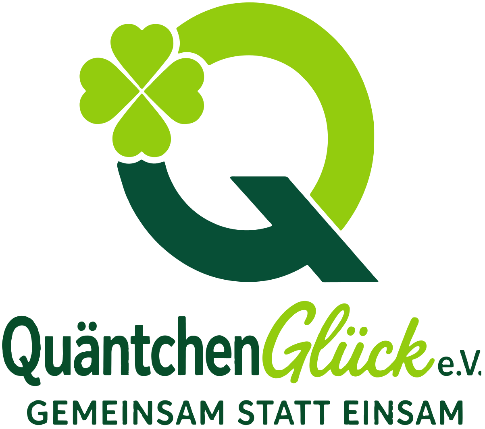
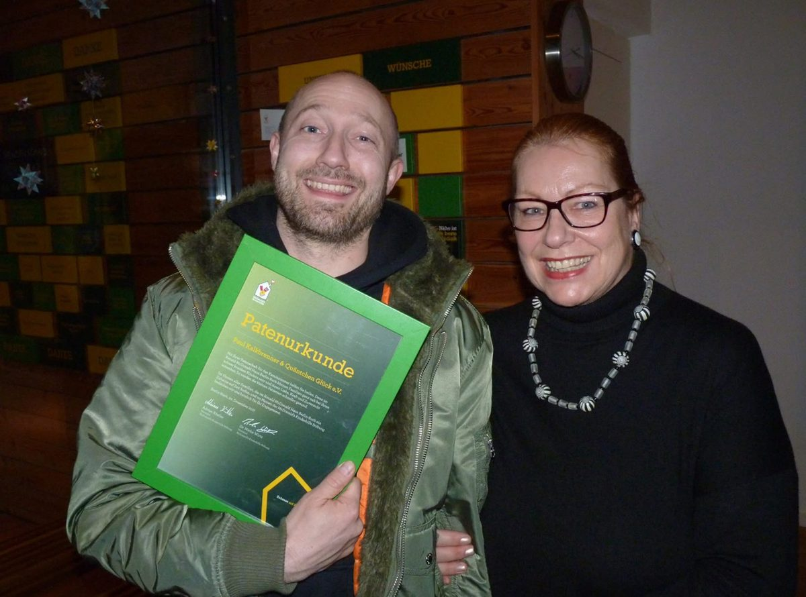
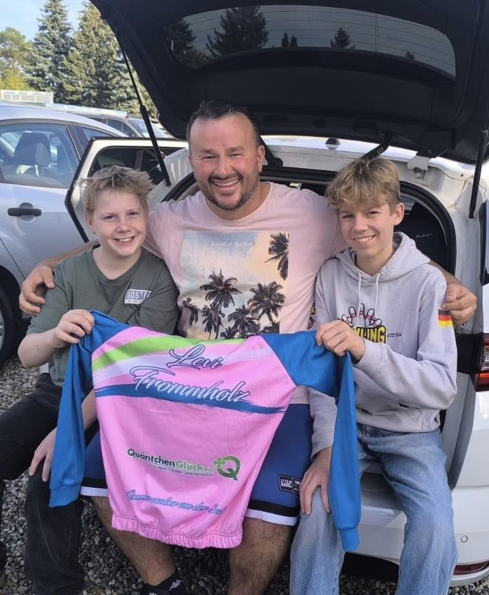
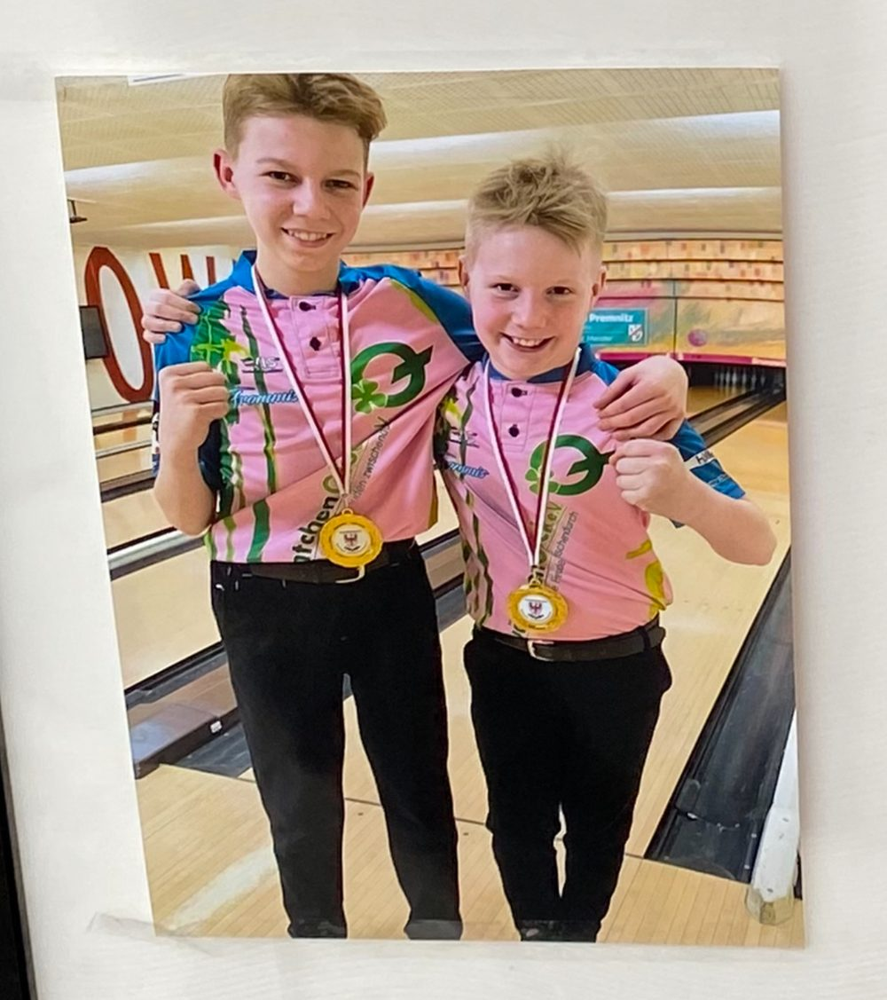
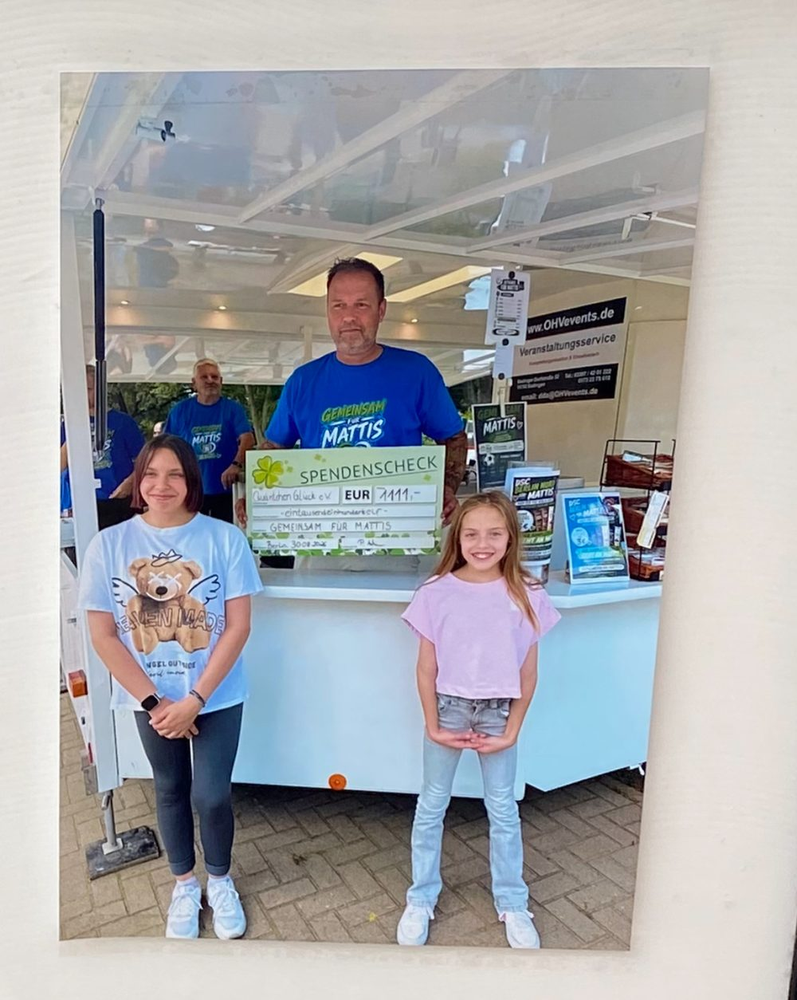

Ich möchte helfen
Du möchtest mithelfen oder unterstützen? Wir freuen uns auf dich.
Ich möchte helfen
Gemeinsam statt einsam
Ein Schicksalsschlag, eine Krankheit, eine schwierige Lebenssituation oder ein Traum, der unerreichbar scheint.
Wir sind dort, wo Unterstützung gebraucht wird. Wir helfen Menschen und Tieren, schenken Hoffnung, eröffnen neue Perspektiven und machen Mut, wenn das Leben Herausforderungen bereithält.
Denn manchmal ist es nur ein Quäntchen Glück, das alles verändern kann.
Du möchtest mithelfen oder unterstützen? Wir freuen uns auf dich.
Ich möchte helfenDu oder ein Mensch in deiner Nähe braucht Unterstützung? Erzähl uns deine Geschichte. Wir schauen gemeinsam, was möglich ist.
Ich brauche HilfeGlück kennt keine Grenzen. Wir auch nicht.
Ob jung oder alt, Mensch oder Tier: für uns zählt nicht, woher jemand kommt, sondern wo Hilfe gebraucht wird.
Wir unterstützen seit 2016 Menschen in schwierigen Lebenssituationen, stehen bei Krankheit und Schicksalsschlägen zur Seite und setzen uns für diejenigen ein, die Unterstützung benötigen.
Doch Hilfe bedeutet für uns mehr als das Bewältigen von Notlagen. Wir möchten auch Chancen schaffen, Talente fördern und Herzenswünsche möglich machen.
Denn jeder verdient die Chance auf ein kleines Stück Glück.
Quäntchen Glück e.V.: weil jeder Mensch zählt und jedes Leben wertvoll ist.
Kleine Gesten. Große Wirkung.
Wir glauben daran, dass Hilfe nicht immer groß sein muss, um Großes zu bewirken.
Manchmal ist es eine helfende Hand. Manchmal ein offenes Ohr. Manchmal eine Chance, die vorher unerreichbar schien.
Wir möchten genau dort ansetzen, wo ein kleines bisschen Unterstützung einen großen Unterschied machen kann.
Aus einem Quäntchen Glück kann ein ganzes Stück Hoffnung werden.
Das Leben schreibt unzählige Geschichten. Manche sind voller Freude, andere geprägt von Herausforderungen.
Wir möchten für Menschen und Tiere da sein, die Unterstützung brauchen: ganz gleich, ob durch Krankheit, finanzielle Schwierigkeiten, persönliche Schicksalsschläge oder fehlende Möglichkeiten.
Auch wer eine Leidenschaft verfolgt, ein besonderes Talent besitzt oder einen Herzenswunsch verwirklichen möchte, soll bei uns Gehör finden.
Denn Hilfe hat viele Gesichter. Und Glück auch.
Wir möchten nicht nur helfen, wenn etwas fehlt. Sondern auch ermöglichen, was sonst vielleicht niemals möglich wäre.
Wir helfen dort, wo Hilfe benötigt wird. Unser Einsatz ist so vielfältig wie die Menschen, für die wir da sind.
Wenn ein Kind schwer krank ist, stehen wir der ganzen Familie zur Seite. Wir sammeln Spenden für Wünsche und unterstützen Einrichtungen, die Familien in dieser Zeit begleiten.
Wir fördern Orte, an denen Kinder lernen und spielen. Zum Beispiel unterstützen wir eine Berliner Kita beim Umbau ihres Außengeländes.
Sport verbindet. Wir fördern junge Sportler und sind bei Benefizturnieren dabei, zuletzt im Sommer 2026.
Manchmal melden sich Menschen mit ihrer Geschichte bei uns. Dann schauen wir, wie wir helfen können, zum Beispiel mit einem Spendenaufruf für einen elektrischen Rollstuhl.
Auch Tiere liegen uns am Herzen. Wir haben verschiedene Tierprojekte unterstützt, zum Beispiel mit einer Tierpatenschaft auf einem Berliner Tierhof.
Wir bringen Menschen zusammen. Mit Workshops und Trainingseinheiten, mit Spendenständen und gemeinsamen Aktionen.
Wir sind für alle Menschen da, unabhängig von Alter oder Lebenssituation. Im Mittelpunkt stehen Menschen, die Unterstützung, Zusammenhalt oder einfach ein kleines Quäntchen Glück brauchen.
Wir stehen Familien zur Seite, wenn ein Kind schwer krank ist. Damit ein Stück normaler Alltag möglich bleibt.
Wir unterstützen Menschen, die es gerade nicht leicht haben.
Wir helfen Einrichtungen und Vereinen, die für andere da sind.
Wir fördern auch kleinere Sportarten und junge Menschen, die gemeinsam etwas erreichen wollen.
Erzähl uns deine Geschichte. Wir schauen gemeinsam, was möglich ist.
Ich brauche HilfeDein Quäntchen kann Großes bewirken.
Glück wird größer, wenn man es teilt.
Ob durch eine Spende, eine Partnerschaft, ehrenamtliches Engagement oder eine kleine Geste: jeder Beitrag kann etwas bewegen.
Gemeinsam können wir Hoffnung schenken, neue Möglichkeiten schaffen und Menschen und Tieren zeigen, dass sie nicht allein sind.
Denn aus vielen kleinen Quäntchen Glück kann etwas ganz Großes entstehen.
Weil ein Quäntchen Glück Leben verändern kann.
Du möchtest nicht nur Gutes tun, sondern langfristig etwas bewegen? Dann werde Teil unserer Glücksgemeinschaft!
Ob als Glückspate mit einer regelmäßigen Unterstützung oder als Glückspartner mit individuellem Engagement: du entscheidest, auf welche Weise du dich einbringen möchtest.
Gemeinsam machen wir aus deinem Quäntchen Glück etwas Großes.

Im Dezember 2017 übernahm Paul Kalkbrenner als Schirmherr von Quäntchen Glück e.V. eine dreijährige Patenschaft für das Kaminzimmer im Ronald McDonald Haus Berlin-Buch: und schenkte damit Familien schwer kranker Kinder ein Stück Geborgenheit.
Mit dieser besonderen Weihnachtsüberraschung unterstützte er einen wichtigen Rückzugsort für Familien, die während der Behandlung ihrer Kinder vor großen Herausforderungen stehen.
Ein wunderbares Beispiel dafür, wie gemeinsames Engagement Hoffnung schenken und ein Quäntchen Glück Großes bewirken kann.
Ab 25 € im Monat: du entscheidest, wie viel Glück du schenken möchtest.
Als Glückspate begleitest du unsere Arbeit mit einer regelmäßigen Unterstützung und hilfst uns, langfristig Gutes zu bewirken.
Du bist so lange Glückspate wie du möchtest und kannst jederzeit dein Kleeblatt ablegen.
Ob 25 €, 50 €, 100 € oder mehr: du bestimmst selbst, wie viel du beitragen möchtest.
Jede Patenschaft ist wertvoll. Denn viele kleine Quäntchen Glück können gemeinsam etwas Großes entstehen lassen.
Gemeinsam Großes bewegen: mit individuellem Engagement.
Du möchtest als Privatperson, Unternehmen oder Förderer etwas Besonderes bewirken?
Unsere Glückspartnerschaft ist flexibel und wird individuell auf dich und deine Vorstellungen angepasst.
Als Glückspartner hast du die Möglichkeit, unsere Arbeit mit einem größeren finanziellen Beitrag, einer individuellen Förderung oder einer besonderen Partnerschaft zu unterstützen.
Gemeinsam finden wir eine Form des Engagements, die zu dir und deinen Möglichkeiten passt.
Besondere Unterstützer und Partner können auf Wunsch auch auf unserer Webseite vorgestellt und für ihr Engagement gewürdigt werden.
Denn hinter jedem großen Glück stehen Menschen, die es möglich machen.
Unsere Glückspatenschaften befinden sich derzeit in Vorbereitung.
Schon jetzt kannst du dein Interesse an einer Glückspatenschaft oder Glückspartnerschaft bekunden.
Wir freuen uns darauf, gemeinsam mit dir etwas zu bewegen!
Der Button führt zum Kontaktformular. In der GitHub-Pages-Vorschau wird noch keine Nachricht verschickt.
Talent verdient eine Chance: und Leidenschaft die richtige Unterstützung.


Seit 2025 begleitet Quäntchen Glück e.V. die beiden Nachwuchsbowler Levi (14) und Peo (10) Frommholz als Sponsoringpartner auf ihrem sportlichen Weg.
Mit Sachspenden, der Unterstützung bei Reisen und finanziellen Starthilfen helfen wir den Brüdern dabei, ihrer Leidenschaft nachzugehen und sich sportlich weiterzuentwickeln.
Denn wir sind überzeugt: Große Träume sollten nicht an fehlenden Möglichkeiten scheitern.
Zwei junge Talente, große Ziele und ein Quäntchen Glück an ihrer Seite.

Ein schwerer Schicksalsschlag, der viele Menschen bewegt hat.
Im Juni 2026 erkrankte der zwölfjährige Mattis aus Mühlenbeck an einer lebensbedrohlichen Sepsis, infolge derer ihm beide Hände und Füße amputiert werden mussten.
Auch Quäntchen Glück e.V. beteiligte sich an der großen Hilfsaktion und sammelte Spenden, um Mattis und seine Familie bei den bevorstehenden Herausforderungen zu unterstützen.
Denn manchmal kann ein Quäntchen Glück einen großen Unterschied machen.
Hier erfährst du, was bei uns los ist. Und wo du uns treffen kannst.
Bei Veranstaltungen sind wir auch mit unserem Hornbach-Stand vor Ort und kommen mit Menschen ins Gespräch.
Zuletzt waren wir im Sommer 2026 bei einem Benefiz-Fußballturnier dabei.
Wir arbeiten mit anderen Vereinen und Einrichtungen zusammen: mit Kitas und Fördervereinen, mit Sportvereinen und mit Kliniken für Familien mit kranken Kindern.
Der Name steht für die Idee, dass manchmal schon ein kleiner Anstoß viel verändern kann. Genau dieses Stück Unterstützung möchten wir Menschen ermöglichen.
Für alle Menschen, unabhängig von Alter oder Lebenssituation. Im Mittelpunkt stehen Menschen, die Unterstützung, Zusammenhalt oder einfach ein kleines Quäntchen Glück brauchen.
Auf unterschiedlichen Wegen. Praktisch, schnell und unbürokratisch. Wir wählen Projekte sorgfältig aus und begleiten ihre Umsetzung.
In Berlin, vor allem im Osten der Stadt und in der Umgebung.
Seit 2016.
Unser farbenfrohes Logo steht für kreative Hilfe, Lebensfreude und Zusammenhalt.
Mithelfen und unterstützen kannst du zum Beispiel als helfende Hand bei unseren Aktionen, an einem Spendenstand oder bei einem Benefizturnier. Du kannst auch Mitglied werden oder uns eine Idee für eine Aktion schicken.
Denn gemeinsam schenken wir mehr Glück im Leben.
MithelfenQuäntchen Glück e.V.
Gerstenweg 84
12683 Berlin
E-Mail: Vorschau, Angaben werden vor Veröffentlichung ergänzt.
Angaben nach § 5 DDG. Vorschau: Angaben werden vor Veröffentlichung ergänzt.
Vorschau: Angaben werden vor Veröffentlichung ergänzt.
Dieser Text beschreibt nur die hier sichtbare Vorschau und das vorbereitete, hier nicht aktive Formular. Er ist keine Rechtsberatung. Quellen: § 5 DDG, DSGVO, § 25 TDDDG.
Quäntchen Glück e.V., Gerstenweg 84, 12683 Berlin. Datenschutzadresse: Vorschau: Angaben werden vor Veröffentlichung ergänzt.
Die Seitenfassung wird über GitHub Pages ausgeliefert. GitHub Pages ist ein statischer Host. Die Dokumentation „What is GitHub Pages“ sagt: beim Besuch wird die IP-Adresse protokolliert und zu Sicherheitszwecken gespeichert, auch ohne Anmeldung bei GitHub. Quelle: What is GitHub Pages, Abschnitt Data collection. Dieselbe Seite nennt keine feste Aufbewahrungsdauer für diese Sicherheitsprotokolle. Eine Frist wird hier nicht angegeben. Die allgemeine Datenschutzerklärung von GitHub beschreibt eine internationale Verarbeitung, einschließlich der USA, und Transfermechanismen. Vertragsrolle für diesen Auftritt: Vorschau: Angaben werden vor Veröffentlichung ergänzt.
Die Seite setzt keine Cookies und kein Tracking. Schriften und Bilder liegen auf demselben Host. Es gibt keine Verbindung zu Google Fonts und keine Analysewerkzeuge. Die Domain bei STRATO ist nicht der Host dieser Fassung. Angaben zu STRATO gelten erst, wenn der Versand dort tatsächlich läuft.
Das Kleeblatt beim Öffnen bleibt sichtbar, höchstens eine Sekunde, bei jedem Aufruf. Es speichert nichts: kein Cookie, kein sessionStorage, kein localStorage. Bei reduzierter Bewegung und ohne Skript erscheint es nicht. Eine Ausnahme nach § 25 Abs. 2 TDDDG wird dafür nicht in Anspruch genommen, weil kein Speicherzugriff mehr stattfindet.
In dieser Vorschau wird keine Nachricht verschickt. GitHub Pages führt das vorgesehene PHP-Skript nicht aus. Empfänger und Absender sind serverseitig noch leer. Solange das so bleibt, nimmt auch das Skript selbst keine Nachricht an.
Wenn der Versand später auf einem PHP-Server aktiv ist, sind E-Mail, Anliegen und Nachricht nötig. Name und Telefon sind freiwillig. Dateien werden nicht hochgeladen. Bitte keine Gesundheitsdaten senden. Der Zweck ist, die Anfrage zu beantworten. Grundlage ist für eine allgemeine Anfrage Art. 6 Abs. 1 lit. f DSGVO, das Interesse des Vereins, auf die Anfrage zu reagieren. Art. 6 Abs. 1 lit. b DSGVO nur, wenn die Anfrage tatsächlich einen Vertrag betrifft. Eine Einwilligung wird dafür nicht abgefragt und ersetzt die Grundlage nicht.
Das Skript soll den Inhalt nicht speichern, sondern nur per E-Mail weitergeben. Wohin die Mail geht, welche Weiterleitungen bestehen und wann Postfach oder Sicherungskopien gelöscht werden, ist noch nicht festgelegt. Eine pauschale Frist wird nicht behauptet. Für die Missbrauchsbegrenzung legt das Skript einen Hash der IP-Adresse, den Startzeitpunkt und einen Zähler in eine Datei. Den Nachrichtentext legt es nicht ab. Der Zählzeitraum beträgt eine Stunde. Bei jedem Aufruf der Rateprüfung löscht das Skript Dateien, deren Zeitraum abgelaufen ist. Es gibt keinen eigenen Zeitplan. Kommt keine weitere Rateprüfung, bleibt die letzte Datei liegen, bis eine spätere Rateprüfung sie löscht. Eine Löschung nach spätestens einer Stunde wird deshalb nicht versprochen.
Das Skript liest höchstens 16 KiB der Anfrage und weist alles darüber ab, auch wenn die Längenangabe fehlt oder nicht stimmt. Längere Feldinhalte werden abgewiesen und nicht gekürzt. PHP post_max_size muss mindestens 16K betragen. Ein zusätzliches Webserverlimit LimitRequestBody von mindestens 16384 ist für den späteren Betrieb vorgesehen.
Erst wenn das Skript auf dem PHP-Server läuft, setzt es ein Sitzungscookie, nur um das Formular-Token diesem Browser zuzuordnen. Diese Vorschau setzt das Cookie nicht, weil der Aufruf hier fehlschlägt.
Falls der Versand später über STRATO läuft, nennt STRATO für eigene Sicherheitsprotokolle der IP-Adresse höchstens sieben Tage. Das gilt nicht für Nachrichten, Postfächer oder alle Sicherungen. Auftragsverarbeitung: Vorschau: Angaben werden vor Veröffentlichung ergänzt.
Du kannst Auskunft, Berichtigung, Löschung und Einschränkung verlangen und der Verarbeitung widersprechen, soweit die Voraussetzungen vorliegen. Datenübertragbarkeit gilt nur, wo sie rechtlich greift. Beschwerde ist bei einer Aufsichtsbehörde möglich, für Berlin bei der Berliner Beauftragten für Datenschutz und Informationsfreiheit. Eine automatisierte Entscheidung findet nicht statt.